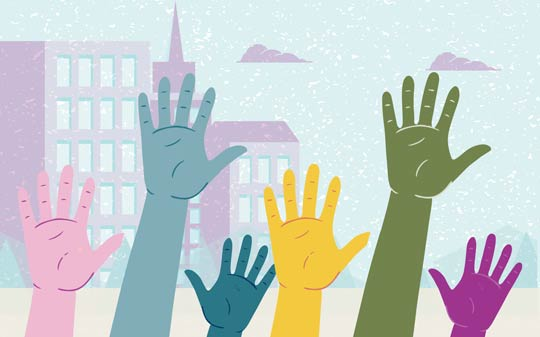

¿Qué es la Educación Cívica?
Es un proceso educativo que busca enseñar a las personas cómo funciona el Estado, cuáles son sus derechos y deberes como ciudadanos, y cómo pueden participar activamente en la vida democrática del país.

Derechos y Deberes de los Ciudadanos
- Derecho a la educación, salud y vivienda
- Libertad de expresión y participación
- Deber de respetar la ley y a los demás

Participación Ciudadana
Los ciudadanos pueden participar votando, formando organizaciones, opinando en espacios públicos o participando en juntas de vecinos. ¡Tu voz importa!
